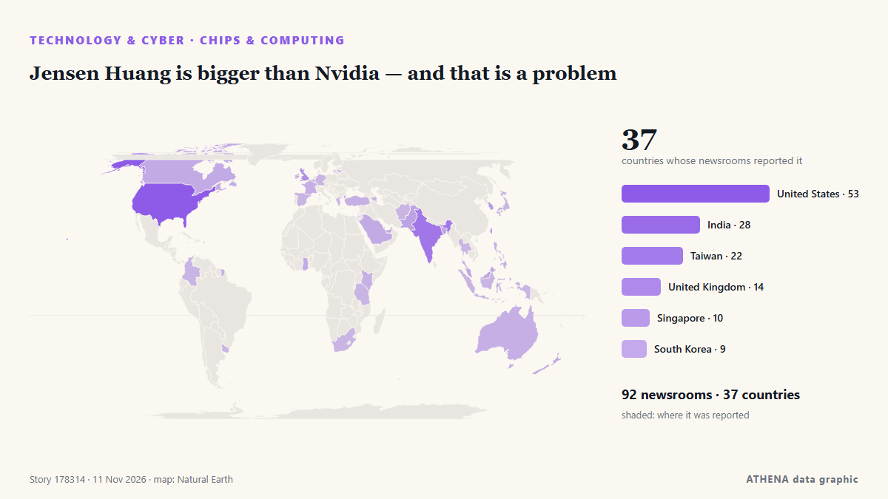

Jensen Huang is bigger than Nvidia — and that is a problem

Reported independently by 92 outlets in 37 countries since 8 Nov, first by City A.M.; coverage is still spreading. ATHENA rates the risk elevated (4.4/10), driven mainly by the severity of the harm described and its geographic and sector reach. Confidence is 86% (high), with 92 independent outlets corroborating it and an average source reliability of 72%. Outlets by country: Taiwan (13), United States (7), United Kingdom (2). Coverage: 8 Nov to 10 Nov, 45 hours.
Why it matters: Technology and cyber developments shape security, competition and the rules of digital life.
What changed: 83 new reports from 48 outlets in the 24 hours to 11 Nov.
First reported as: Taiwan planning harsher penalties for collaborators
How to read this page
- What you are reading
- 92 outlets in 37 countries reported this event. The reports below are listed in the order they appeared; each headline opens the original article. ATHENA writes none of the reports.
- Our reading
- For the record — The reports describe a completed, domestic, commercial or personal matter. We list it so you can see who reported it and when. We are not tracking a risk of wider conflict here.
- How much evidence
- Fair Several independent outlets agree, but the picture could still change.
After repeats, off-topic items and stale reports are removed, 15 of the 37 listed reports are counted; 68% of the headlines match the event.
About 33% of the headlines are analysis or opinion rather than straight reporting.
- What this does not mean
- ATHENA measures how an event is reported, not whether it is true. This is not a forecast, a judgement on who is right, or advice.
- What would change it
- Reports from other independent outlets showing a different development, or a firm confirmation or denial from an official source.
Reading R2 · refreshed with every update of this page. ATHENA has not yet published a track record for these readings; when it does, it will be linked here.
At a glance
Selected, scored and written by ATHENA's published methodology. No editor intervenes in individual events. How this is produced ›
| 08 Nov 11:02 UTC | 1 |
|---|---|
| 08 Nov 14:02 UTC | 0 |
| 08 Nov 17:02 UTC | 0 |
| 08 Nov 20:02 UTC | 0 |
| 08 Nov 23:02 UTC | 0 |
| 09 Nov 02:02 UTC | 3 |
| 09 Nov 05:02 UTC | 3 |
| 09 Nov 08:02 UTC | 3 |
| 09 Nov 11:02 UTC | 2 |
| 09 Nov 14:02 UTC | 2 |
| 09 Nov 17:02 UTC | 1 |
| 09 Nov 20:02 UTC | 1 |
| 09 Nov 23:02 UTC | 6 |
| 10 Nov 02:02 UTC | 6 |
| 10 Nov 05:02 UTC | 10 |
| 10 Nov 08:02 UTC | 21 |
| 10 Nov 11:02 UTC | 19 |
| 10 Nov 14:02 UTC | 18 |
| 10 Nov 17:02 UTC | 18 |
| 10 Nov 20:02 UTC | 25 |
| 10 Nov 23:02 UTC | 8 |
| 11 Nov 02:02 UTC | 15 |
| 11 Nov 05:02 UTC | 15 |
| 11 Nov 08:02 UTC | 8 |
| 11 Nov 11:02 UTC | 9 |
| 11 Nov 14:02 UTC | 4 |
| 11 Nov 17:02 UTC | 4 |
| 10 Nov 11:29 UTC | 3.6 |
|---|---|
| 10 Nov 15:41 UTC | 3.6 |
| 11 Nov 00:30 UTC | 4.8 |
| 11 Nov 11:44 UTC | 4.8 |
| 11 Nov 20:26 UTC | 4.4 |
Why these numbers
Importance
Risk
Confidence
The reporting — who reported it, and when
headline as published · opens the original- City A.M. · United Kingdom‘Dear CEO’: Union reps hit chief executive inboxes at 12.03am
- Nikkei Asia · JapanTaiwan chipmaker CEO warns memory price rises are unsustainable
- MyJoyOnline · GhanaChiefs commend ADAMUS CEO for support to Esiama SHS
- DigiTimes Asia · TaiwanCommentary: AI investment doubts rise, but chip demand keeps surging
- Prothom Alo (English) · BangladeshNvidia launches investigation into CEO amid reports China spied on him
- DigiTimes Asia · TaiwanSamsung, SK Hynix, Micron forge rare alliance to pave way for unmanned chip fabs
- DigiTimes Asia · TaiwanUS-approved Nvidia H200 handlers in China include firms with empty offices and blacklist ties
- DigiTimes Asia · TaiwanKYEC warns AI demand is amplifying semiconductor supply-chain risks
- DigiTimes Asia · TaiwanNvidia's Taiwan partners rally despite Jensen probe
- Daily Guide Network · GhanaEsiama Chiefs Commend Adamus CEO
- Antara (English) · IndonesiaITB students design anti-counterfeiting chip for e-passports
- STAT News · United StatesSTAT+: Pharmalittle: We’re reading about a Novartis heart drug, BIO fighting a Trump program, and more
- Israel Hayom (English) · IsraelWho is Alice Huang? The woman at the center of Nvidia CEO's scandal
- The Korea Times · South Korea'No ordinary CEO': Why the AI race cannot do without Nvidia's Jensen Huang
- France 24 English · FranceNvidia's Huang scandal rattles AI industry built around him
- The Verge · United StatesEverything we know so far about the Nvidia spy scandal targeting CEO Jensen Huang
- PBS NewsHour · United StatesHow the Nvidia revelations could ripple through the AI industry and global economy
- DigiTimes Asia · TaiwanExclusive: Quantum beyond quantum—Photarix bets on a new era of semiconductor photonics
- Guardian Business · United KingdomTrump backs embattled Hegseth and Jensen Huang and says FBI looking into spy allegations – video
- DigiTimes Asia · TaiwanCommentary: China's emerging semiconductor investment empire takes quieter route to dominance
- The Korea Times · South Korea'No ordinary CEO': Why AI race cannot do without Nvidia's Jensen Huang
- DigiTimes Asia · TaiwanTrump says FBI examining Huang affair as Nvidia faces widening legal scrutiny
- DigiTimes Asia · TaiwanNvidia probe fuels push for China chip curbs, raising risks for Samsung, SK Hynix
- DigiTimes Asia · TaiwanCommentary: How will US midterms and Jensen Huang controversy reshape AI policy?
- DigiTimes Asia · TaiwanJensen Huang drawn into spy allegations as China denies complicity
- TechCrunch · United StatesJensen Huang’s alleged honeypot scandal has inspired some top-notch memes
- Business Insider · United StatesPhotos show Jensen Huang and Alice Huang together over the years
- DigiTimes Asia · TaiwanNvidia could face more scrutiny by new Congress in wake of spy probe
- Business Insider · United StatesThe Chinese internet is trying to figure out who lost the most in the fallout of Jensen Huang's affair
- ABC News Australia · AustraliaWho is Jensen Huang and why is the Nvidia CEO scandal important?
- Prothom Alo (English) · BangladeshTrump's close ties to Nvidia's Huang scrutinised after foreign intelligence concerns
- DigiTimes Asia · TaiwanNvidia legal chief accused of interfering in Megaspeed probe
- Rappler · PhilippinesTrump’s close ties to Nvidia’s Huang scrutinized after foreign intelligence concerns
- The Citizen (Tanzania) · TanzaniaTrump says FBI probing Nvidia CEO Huang as China controversy deepens
- Indian Express · IndiaTrump says he believes Nvidia CEO Jensen Huang over alleged China spy links
- Semiconductor Engineering · United StatesAI’s Efficiency Challenge For The Semiconductor Industry
- Gulf News · United Arab EmiratesWho is Lori Huang? Nvidia CEO Jensen Huang’s wife could get $75 billion in divorce without prenup